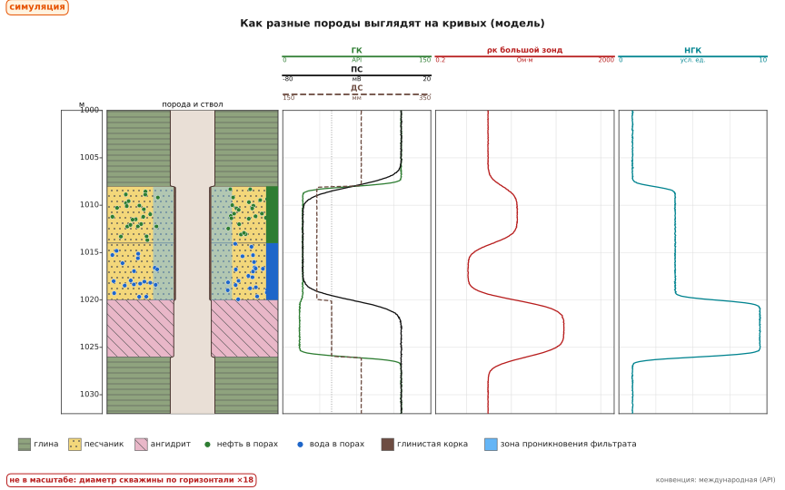

Путь › Методы ГИС и литологический разрез › Шаг 12 из 34
Подписи пород на диаграммах ГИС
В книге: «Основные признаки осадочных пород и коллекторов по данным ГИС (табл. 21)» стр. 92–95
Опирается на: шаг 11 «Как строят разрез скважины по ГИС» (предпосылка, пример), шаг 8 «Какой метод для какой задачи» (предпосылка)
Суть
Каждая порода оставляет «подпись» сразу на нескольких кривых; узнают её по сочетанию, а не по одной кривой.
Справочник таких подписей — таблица 21 для бурения на глинистом растворе.
В природе есть переходные породы: глинистость, песчанистость и гипс сдвигают признаки, и выводы становятся менее надёжными.
Пороговая идея. Каждая порода оставляет «подпись» сразу на нескольких кривых; узнают породу по сочетанию, а не по одной кривой. модель
Разбор источника
Определите, где наблюдение, вывод или допущение. Раскройте утверждение, чтобы свериться с ответом и цитатой.
Для оценки распространённых осадочных пород есть ориентировочные данные — табл. 21.
Наблюдение · стр. 92
«Для оценки наиболее распространенных осадочных пород можно использовать ориентировочные данные (табл. 21).»
В таблице только ясно выраженные типы пород и межзерновые коллекторы.
Допущение · стр. 92
«в этой таблице даны признаки лишь наиболее ясно выраженных типов пород и коллекторов межзернового типа»
В природе встречаются переходные разности пород.
Наблюдение · стр. 92
«В природных условиях могут встречаться также переходные разности от одного типа к другому.»
Рост песчанистости глины уменьшает её пористость и вероятность каверны, увеличивает сопротивление.
Вывод · стр. 92
«увеличение песчанистости глины может привести к уменьшению ее пористости и вероятности образования против нее каверны, увеличению сопротивления»
Рост пластичности глины даёт сужение диаметра скважины вместо каверны.
Вывод · стр. 92
«увеличение пластичности - к тому, что вместо каверны против глины создается сужение диаметра скважины»
Рост глинистости нефтенасыщенного песчаника уменьшает амплитуду СП и сильно снижает сопротивление.
Вывод · стр. 92
«Повышение содержания глинистого материала в нефтенасыщенном песчанике приводит к уменьшению амплитуды СП и значительному снижению сопротивления.»
Глины по табл. 21: низкое сопротивление, нет проникновения, максимальные СП и гамма, минимальные нейтронные показания.
Наблюдение · стр. 93
«Глины | низкое | Отсутствие проникновения | максимальные»
Газонасыщенные межзерновые коллекторы выделяются максимальными показаниями нейтронных методов.
Наблюдение · стр. 93
«насыщенные газом с небольшим содержанием связанной воды | То же | То же | - | - | - | - | максимальные»
Ангидриты и плотные известняки: максимальное сопротивление, нет проникновения, максимальные нейтронные показания.
Наблюдение · стр. 94
«Ангидриты, чистые плотные кристаллические известняки | максимальное | Отсутствие проникновения»
Калийные соли выделяются аномально высокими показаниями гамма-метода.
Наблюдение · стр. 94
«Калийные соли | - | - | - | То же | То же | Аномально высокие»
У низкопористых чистых карбонатных коллекторов насыщение установить трудно из-за глубокого проникновения.
Наблюдение · стр. 93
«Низкопористые коллекторы в чистых карбонатных разностях. Характер насыщения порового про-»
При большой глинистости меняются показания и других методов, и коллектор выделить трудно.
Вывод · стр. 95
«если содержание глинистого материала велико, то могут резко измениться показания и других методов, что вызовет затруднение в выделении такого коллектора»
Загипсованность пород уменьшает показания НГМ.
Наблюдение · стр. 95
«Загипсованность пород приводит к уменьшению показаний НГМ.»
Как это работает
Справочник признаков
Для распространённых осадочных пород автор даёт ориентировочные признаки — таблицу 21. В ней по каждой породе указано поведение кривых. Это методы сопротивления, СП, кавернограмма (диаграмма диаметра скважины), микрозонды, гамма-метод и нейтронные методы. стр. 92
«Для оценки наиболее распространенных осадочных пород можно использовать ориентировочные данные (табл. 21).»
Важно допущение: в таблице только ясно выраженные типы пород и коллекторы межзернового типа. И признаки даны для глинистого раствора. стр. 92
«в этой таблице даны признаки лишь наиболее ясно выраженных типов пород и коллекторов межзернового типа»
Примеры подписей
Глины по таблице: низкое сопротивление и нет проникновения. Показания СП и гамма-метода максимальные, нейтронных методов — минимальные. Диаметр скважины больше номинала, а микрозонды показывают низкие совпадающие значения. стр. 93
«Глины | низкое | Отсутствие проникновения | максимальные»

Межзерновые коллекторы, насыщенные газом с небольшим содержанием связанной воды, выделяются максимальными показаниями нейтронных методов. стр. 93
«насыщенные газом с небольшим содержанием связанной воды | То же | То же | - | - | - | - | максимальные»
Ангидрит — плотная сульфатная порода. Ангидриты и чистые плотные известняки дают максимальное сопротивление, проникновения нет. Нейтронные показания у них максимальные. Значит, высокое сопротивление бывает и без нефти. стр. 94
«Ангидриты, чистые плотные кристаллические известняки | максимальное | Отсутствие проникновения»
Калийные соли выделяются аномально высокими показаниями гамма-метода. А у низкопористых коллекторов в чистых карбонатах насыщение установить трудно: мешает глубокое проникновение. стр. 93–94
«Калийные соли | - | - | - | То же | То же | Аномально высокие»
«Низкопористые коллекторы в чистых карбонатных разностях. Характер насыщения порового про-»
Переходные разности
В природе встречаются переходные разности — породы с промежуточными свойствами, например песчанистая глина. Их признаки отличаются от табличных. стр. 92
«В природных условиях могут встречаться также переходные разности от одного типа к другому.»
Рост песчанистости глины уменьшает её пористость и вероятность каверны. Сопротивление при этом растёт. А рост пластичности глины даёт против неё сужение ствола вместо каверны. стр. 92
«увеличение песчанистости глины может привести к уменьшению ее пористости и вероятности образования против нее каверны, увеличению сопротивления»
«увеличение пластичности - к тому, что вместо каверны против глины создается сужение диаметра скважины»
Рост глинистости нефтенасыщенного песчаника уменьшает амплитуду СП. Сопротивление при этом значительно снижается. стр. 92
«Повышение содержания глинистого материала в нефтенасыщенном песчанике приводит к уменьшению амплитуды СП и значительному снижению сопротивления.»
Нюансы
При большой глинистости резко меняются показания и других методов. Тогда такой коллектор выделить трудно. Загипсованность — содержание гипса — уменьшает показания нейтронного гамма-метода (НГМ). Всё это затрудняет построение разреза. стр. 95
«если содержание глинистого материала велико, то могут резко измениться показания и других методов, что вызовет затруднение в выделении такого коллектора»
«Загипсованность пород приводит к уменьшению показаний НГМ.»
Цифры и условия
- Условие таблицы 21: бурение на глинистом растворе, ясно выраженные породы и межзерновые коллекторы. стр. 92
- Глины: СП и гамма-метод максимальные, нейтронные — минимальные. стр. 93
- Газонасыщенный межзерновой коллектор: нейтронные показания максимальные. стр. 93
- Калийные соли: аномально высокие показания гамма-метода. стр. 94
Таблицы книги
Таблица 21. **Основные признаки некоторых осадочных пород и коллекторов по данным геофизических методов (глинистый раствор).** стр. 93
| Породы и коллекторы | Методы сопротивления | Метод СП | Кавернограмма | Микрозонды | Гамма-метод | Нейтронные методы | |
|---|---|---|---|---|---|---|---|
| $$\rho_n$$ | Характер зоны проникновения | $$U_{cn}$$ | $$d_c$$ | $$\rho_n$$ | $$I\gamma$$ | $$In\gamma, Inn$$ | |
| Глины | низкое | Отсутствие проникновения | максимальные | $$d_c > d_n$$ | Низкие, совпадающие для микрозондов разной длины | максимальные | Минимальные |
| Пески, песчаники, высокопористые карбонатные коллекторы с межзерновой пористостью, насыщенные высокоминерализованной водой | минимальное | $$\rho_p < \rho_m \geq \rho_n$$ | минимальные | $$d_c < d_n$$ | Средние, не совпадающие для микрозондов разной длины | средние | средние |
| Пески, песчаники, высокопористые, карбонатные коллекторы с межзерновой пористостью, насыщенные нефтью с небольшим содержанием связанной воды | среднее | $$\rho_p < \rho_m > \rho_n$$ $$\rho_p < \rho_m < \rho_n$$ $$\rho_p < \rho_m = \rho_n$$ | То же | То же | То же | То же | То же |
| Пески, песчаники, высокопористые, карбонатные коллекторы с межзерновой пористостью, насыщенные газом с небольшим содержанием связанной воды | То же | То же | - | - | - | - | максимальные |
| Коллекторы с межзерновой пористостью, насыщенные водой более пресной или такой же, как фильтрат бурового раствора | Среднее | $$\rho_p < \rho_m < \rho_n$$ $$\rho_p < \rho_m = \rho_n$$ | Показания СП выше, чем в глинах или как в глинах; $$\rho_p \leq \rho_n$$ | $$d_c = d_n$$ | - | - | средние |
| Низкопористые коллекторы в чистых карбонатных разностях. Характер насыщения порового про- | То же | Глубокое проникновение | Минимальные или фильтрата, кажущееся отсутствие проникновения | То же | - | минимальные | То же, но выше, чем в песчаных коллекторах |
| странства установить трудно из-за глубокого проникновения. Могут обладать как межзерновой, так и трещиной пористостью | |||||||
| Глинистые известняки, мергели. Могут обладать как межзерновой, так и трещиной пористостью | - | Отсутствие проникновения | максимальные | - | максимальные, резко меняющиеся | Средние или максимальные | Средние, но выше, чем в песчаных коллекторах |
| Ангидриты, чистые плотные кристаллические известняки | максимальное | Отсутствие проникновения | минимальные | d_{c} = d_{a} | То же | минимальные | Максимальные |
| Гипсы, сильно загипсованные породы | То же | То же | То же | То же | То же | То же | Минимальные |
| Галит (каменная соль) | - | - | - | d_{c} = d_{a} при предельном насыщении раствора солью | минимальные при d_{c} » d_{a}. | Очень низкие | Показания меняются с изменением диаметра скважины от средних до очень высоких |
| Калийные соли | - | - | - | То же | То же | Аномально высокие | То же |
Исправления распознавания: заголовок столбцов «ρn» → ρп (удельное сопротивление пласта; индекс искажён распознаванием); «d_n» и «d_a» в столбце кавернограммы → dн (номинальный диаметр; индекс искажён распознаванием); строка «Низкопористые коллекторы… порового про-» продолжается на стр. 94: «странства установить трудно из-за глубокого проникновения» (перенос строки таблицы через страницу); «трещиной пористостью» → «трещинной пористостью» (опечатка распознавания)
Частая ошибка модель
Ошибка: Высокое сопротивление всегда означает нефть.
На самом деле: Максимальное сопротивление дают и плотные породы — ангидриты, плотные известняки; породу и насыщение определяют по сочетанию признаков разных методов. стр. 94
Что это значит для данных модель
Таблица 21 — набор правил «порода → ожидаемый отклик каждого метода»; по сути это экспертная модель для классификации.
- Вход
- сопротивление и характер проникновения, СП, кавернограмма, микрозонды, гамма, нейтронные методы
- Выход
- тип породы/коллектора по сочетанию признаков
- Где ломается
- Переходные разности, большая глинистость, загипсованность и другой тип раствора смещают признаки.
- гипотеза Таблицу можно формализовать как правила или априорные вероятности для классификатора литологии.
Где здесь ручной труд специалиста
- Входные данные
- все кривые комплекса по интервалу
- Ручные шаги
- сравнение показаний каждой кривой с таблицей для каждого пласта
- Точки суждения
- как трактовать переходные разности
- Время
- трудоёмко на длинных разрезах
- Типичные ошибки
- не учитывать переходные разности и тип раствора
Аналогия модель
Как таблица сигнатур (rule-based classifier): у каждого класса — ожидаемые значения по нескольким признакам.
Где аналогия перестаёт работать: Сигнатуры размыты: переходные породы и условия скважины сдвигают значения, а правила таблицы сформулированы только для глинистого раствора.
Как это делается сейчас модель
Аналогичные признаки сегодня используют в программных модулях литологической интерпретации и при ручной проверке результатов.
Глубже
Как читать таблицу признаков модель
Строка — тип породы, столбцы — методы; ячейка — типичное поведение кривой (высокое/низкое, совпадают ли кривые микрозондов, сужен ли ствол). Породу ищут по совпадению нескольких ячеек сразу.
Новые понятия
- кавернограмма (caliper log)
- Диаграмма диаметра скважины по глубине. стр. 93 модель
- переходные разности (transitional lithologies)
- Породы с промежуточными свойствами между двумя типами (например, песчанистая глина). стр. 92 модель
- нейтронный гамма-метод (НГМ) (neutron-gamma log)
- Нейтронный метод с регистрацией гамма-излучения, зависящий от водородосодержания породы. стр. 95 модель
- ангидрит (anhydrite)
- Плотная сульфатная порода (безводный сульфат кальция). стр. 94 модель
- загипсованность (gypsum content)
- Содержание гипса в породе. стр. 95 модель
Проверь себя
Вставьте пропущенное слово.
Межзерновые коллекторы, насыщенные газом, выделяются показаниями нейтронных методов.
Верный ответ: Межзерновые коллекторы, насыщенные газом, выделяются [максимальными] показаниями нейтронных методов.
По таблице 21 газонасыщенные коллекторы дают максимальные показания нейтронных методов. Где это в тексте (стр. 93) →
Верный ответ: Ангидрит или плотный известняк
Такое сочетание признаков в таблице 21 — у ангидритов и чистых плотных известняков; высокое сопротивление здесь не значит нефть. Где это в тексте (стр. 94) →
Верный ответ: Амплитуда СП уменьшается; Сопротивление значительно снижается; При большой глинистости меняются показания и других методов
Глина снижает амплитуду СП и сопротивление, а при большой глинистости сдвигает и другие методы. Где это в тексте (стр. 92) →
Источник
Все утверждения шага с дословной цитатой автора и страницей книги (по PDF).
Для оценки распространённых осадочных пород есть ориентировочные данные — табл. 21. наблюдение
«Для оценки наиболее распространенных осадочных пород можно использовать ориентировочные данные (табл. 21).»
В таблице только ясно выраженные типы пород и межзерновые коллекторы. допущение
«в этой таблице даны признаки лишь наиболее ясно выраженных типов пород и коллекторов межзернового типа»
В природе встречаются переходные разности пород. наблюдение
«В природных условиях могут встречаться также переходные разности от одного типа к другому.»
Рост песчанистости глины уменьшает её пористость и вероятность каверны, увеличивает сопротивление. вывод
«увеличение песчанистости глины может привести к уменьшению ее пористости и вероятности образования против нее каверны, увеличению сопротивления»
Рост пластичности глины даёт сужение диаметра скважины вместо каверны. вывод
«увеличение пластичности - к тому, что вместо каверны против глины создается сужение диаметра скважины»
Рост глинистости нефтенасыщенного песчаника уменьшает амплитуду СП и сильно снижает сопротивление. вывод
«Повышение содержания глинистого материала в нефтенасыщенном песчанике приводит к уменьшению амплитуды СП и значительному снижению сопротивления.»
Глины по табл. 21: низкое сопротивление, нет проникновения, максимальные СП и гамма, минимальные нейтронные показания. наблюдение
«Глины | низкое | Отсутствие проникновения | максимальные»
Газонасыщенные межзерновые коллекторы выделяются максимальными показаниями нейтронных методов. наблюдение
«насыщенные газом с небольшим содержанием связанной воды | То же | То же | - | - | - | - | максимальные»
Ангидриты и плотные известняки: максимальное сопротивление, нет проникновения, максимальные нейтронные показания. наблюдение
«Ангидриты, чистые плотные кристаллические известняки | максимальное | Отсутствие проникновения»
Калийные соли выделяются аномально высокими показаниями гамма-метода. наблюдение
«Калийные соли | - | - | - | То же | То же | Аномально высокие»
У низкопористых чистых карбонатных коллекторов насыщение установить трудно из-за глубокого проникновения. наблюдение
«Низкопористые коллекторы в чистых карбонатных разностях. Характер насыщения порового про-»
При большой глинистости меняются показания и других методов, и коллектор выделить трудно. вывод
«если содержание глинистого материала велико, то могут резко измениться показания и других методов, что вызовет затруднение в выделении такого коллектора»
Загипсованность пород уменьшает показания НГМ. наблюдение
«Загипсованность пород приводит к уменьшению показаний НГМ.»
На этот шаг опираются: шаг 13 «Простой разрез и сложный разрез», шаг 14 «Прямые признаки коллектора на диаграммах».